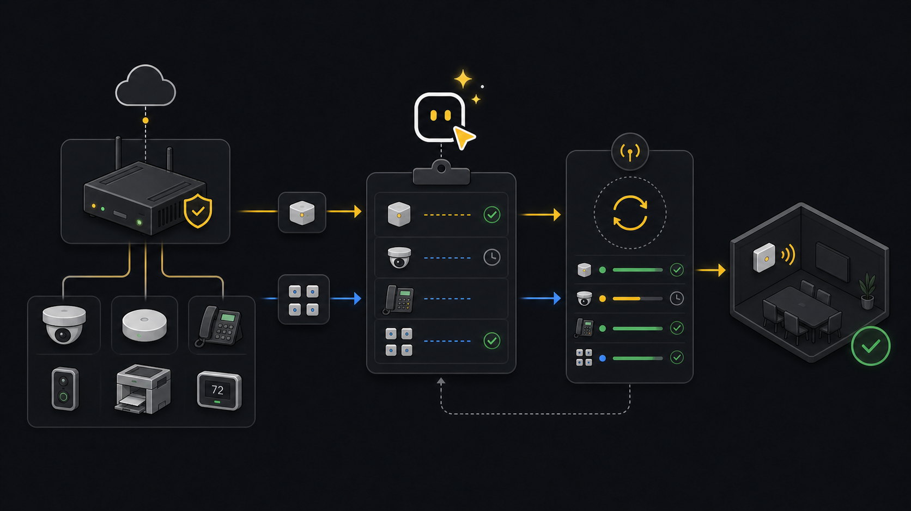

Edge
Edge device claims.
Use this when new IP devices need to be onboarded through an Xyte Edge proxy and you want a planned claim, row-level results, and a resume path for batches.
Ask an agent
Ask for device onboarding. The workflow first chooses the claim path, then plans the claim before any mutation.
Help me claim devices.
Use the ready tenant, or ask which tenant if more than one is ready.
First show which claim path applies: native/direct, Edge, or Cloud-to-Cloud.
If this is Edge, ask whether it is one device or a spreadsheet batch.
Show the plan, missing identifiers, report path, and resume path.
Do not apply the claim until I approve the plan.Workflow
- ChooseClaim pathSeparate native, Edge, and Cloud-to-Cloud requests.
- InputsCollect dataGet proxy, model, IP, and target space details.
- PreparePlan claimUse a single plan or prepared batch rows first.
- ApproveStart claimApply only after the planned target is clear.
- TrackPoll resultUse reports and resume files for batch outcomes.
Choose the right claim path
Do not use Edge claim for every device. Native/direct claim uses serial number, MAC, and cloud id. Edge claim uses proxy id, device IP, model id, and space id. Cloud-to-Cloud claiming is not available through the public API.
Single Edge claim
Plan the claim
Planning checks the inputs without starting the claim.
xyte-cli edge claim \ --tenant <tenant-id> \ --proxy-id <proxy-id> \ --device-ip 192.168.1.100 \ --device-model-id <device-model-id> \ --space-id <space-id> \ --display-name "Room 101 Display" \ --planApply after approval
Apply starts the async claim and polls until success, failure, or timeout.
xyte-cli edge claim \ --tenant <tenant-id> \ --proxy-id <proxy-id> \ --device-ip 192.168.1.100 \ --device-model-id <device-model-id> \ --space-id <space-id> \ --display-name "Room 101 Display" \ --applyCheck status without starting a new claim
Use this after an interruption or when you need to inspect the current claim state.
xyte-cli edge claim-status \ --tenant <tenant-id> \ --proxy-id <proxy-id> \ --device-ip 192.168.1.100
Batch Edge claim
Prepare the spreadsheet
Review the primary CSV and rejected CSV before running the batch.
xyte-cli util prepare \ --action organization.edge.startClaim \ --tenant <tenant-id> \ --input <input.xlsx> \ --output-dir ./preparedPlan and apply the batch
Use report and resume files together. If the run is interrupted, rerun the apply command with the same resume file.
xyte-cli edge claim-batch \ --tenant <tenant-id> \ --input ./prepared/organization-edge-startclaim.csv \ --report ./artifacts/edge-claim.report.ndjson \ --plan xyte-cli edge claim-batch \ --tenant <tenant-id> \ --input ./prepared/organization-edge-startclaim.csv \ --report ./artifacts/edge-claim.report.ndjson \ --resume-artifact ./artifacts/edge-claim.resume.ndjson \ --apply
If it fails
{
"status": "succeeded",
"deviceIp": "192.168.1.100",
"proxyId": "<proxy-id>",
"spaceId": "<space-id>"
}You are done when the claim reaches succeeded or already-claimed. For batches, check the report file for every row disposition before closing the task.
Bring the proxy online, then resume the same batch with the same resume artifact.
Check network and firewall reachability between the Edge proxy and device.
Fix the prepared CSV. Keep successful rows in the resume artifact so they are not repeated.
Check claim status, then rerun with a longer poll timeout if the device is still expected to claim.